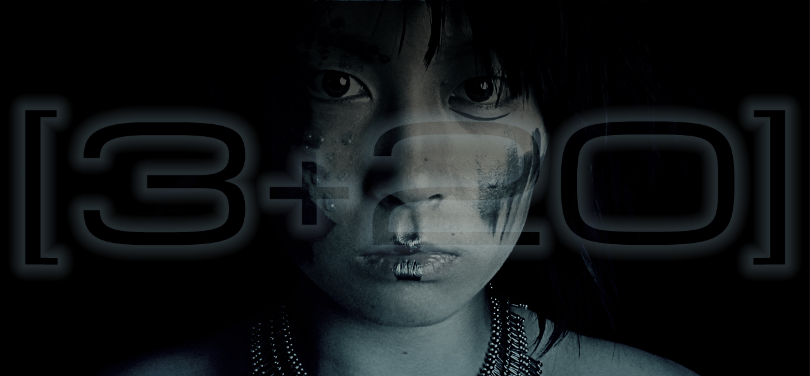
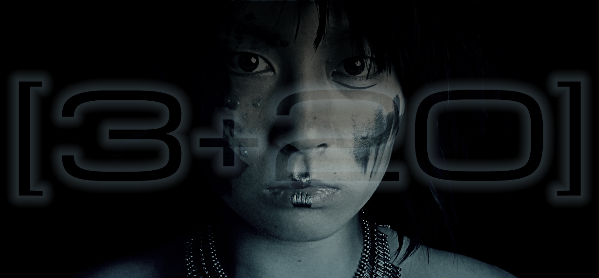
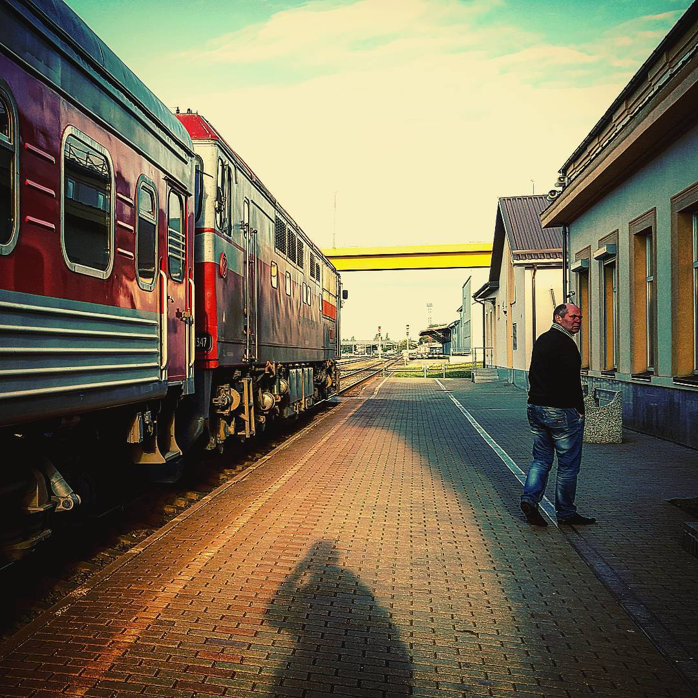
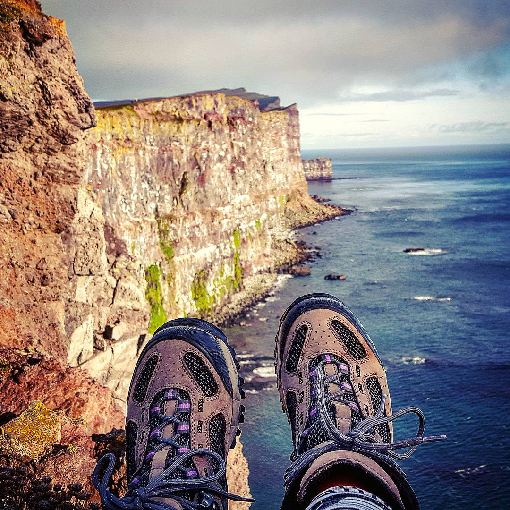
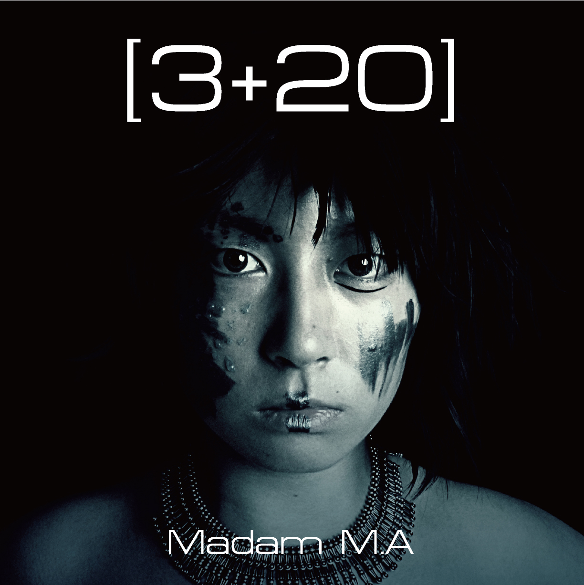

JP | EN


From August to early December in 2015, I went around as a backpacker in Europe: UK, Ireland, Iceland, France, Poland, Lithuania, Germany, Spain and Italy.
"[3+20]" is a mediabook that was made from the recording of my trip and something inspired by visual and feeling burned strong in my brain.
Why it's not a photo book but it is a mediabook － There are reasons. Is this sense filled by only visual sensation? No. The things that organolepic to this sense from this way or that way are visual sensation, hearing and "something so strange" . With bringing that strange feeling, I started to shoot the self makeup photos in the studio in Barcelona, Spain. To express this sensation.

People often ask to me "Why you go to trip?" or "How is your trip?" e.t.c. But I don't have anything to answer. I always go to where I want to go and lose the words. The sense just doesn't leave from my body, and it's so heavy.
I'd like to explode ot by myself, but also I don't want to peel off it from my body forever. So I don't stop to make and express. I AM WHAT I AM and this is the way that I live.
When you'd like to touch this world that doesn't have any words, why don't you see and listen to this mediabook "[3+20]"?

＜Details＞
Book size：21cm×21cm
90 pages | Color
Price：1,500 yen（Tax included）
ISBN 978-4-908994-00-5
There are 4 chapters in this book.
Including a soundtrack CD (4 tracks)
*In this mediabook "[3+20]", THERE IS NO EXPLANATION OF PHOTOS e.t.c AT ALL. Please listen to the sound and enjoy the world.
Born in Japan. Multi-artist as a self makeup portrait photographer, film&video director (actually, not only a director), composer, and disguise maestro(=can change everything by makeup) e.t.c.
M.A Films is a brand name of films by Madam M.A.
M.A Films was founded in October,2011. Almost videos and films are all made by only Madam M.A.
(Director, Producer, Actors, Music, Art, Script, Camera, Editor, Animator…e.t.c)
The experimental short film (music video) "[13.1-9+19+13] Vol.01" (2015) is the Best Animation or Animated Sequence Winner in 2016 International Filmmaker Festival of World Cinema MILAN.